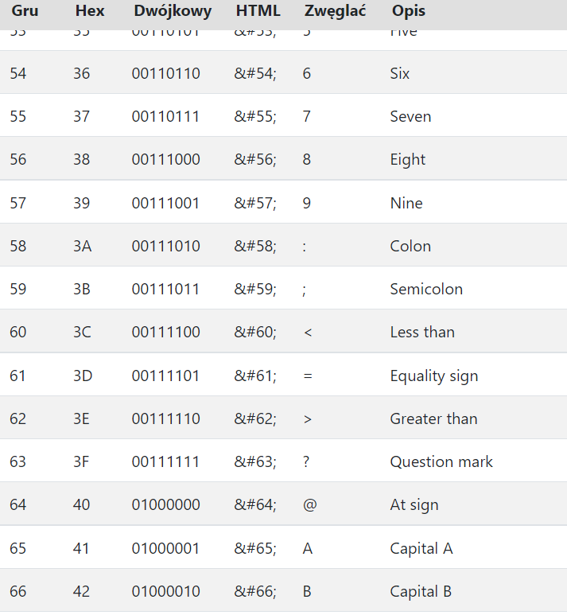

ASCII – siedmiobitowy system kodowania znaków, używany we współczesnych komputerach oraz sieciach komputerowych, a także innych urządzeniach wyposażonych w mikroprocesor. Przyporządkowuje liczbom z zakresu 0−127: litery alfabetu łacińskiego języka angielskiego, cyfry, znaki przestankowe i inne symbole oraz polecenia sterujące.
